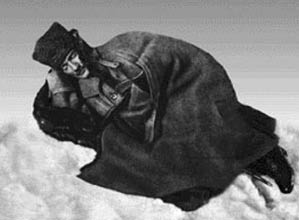

XXXVI
Sakarya Irmağı, tıpkı bir karşı akıntı yüzünden sahilde kırılan ve karışan büyük dalgalar gibi kırılarak karmakarışık düşmüşe benzeyen birbiri üstüne dizilmiş bir dağ silsilesinin bulunduğu dağlık bir bölge arasından akıyordu.
Yunanlılar, 24 Ağustos 1921 günü şafak vakti, Ankara yolunun iki tarafında yer alan Türklerin son savunma hattının tam üstünde bulunan bu tepelere ağır bir top ateşiyle ilk hücumu başlattılar.
Türkler gibi Yunanlılar da, kendilerini mutlak bir çılgınlığın coşkusuna kaptırmış bir halde süngüleri ellerinde, pervasız bir cesaretle birbirlerinin üstüne atıldılar. Bu saldırıda, tarafların hiçbirinde ahlaki üstünlüğün izi bile yoktu. İki taraf da kalıtsal bir nefretin kiniyle dopdoluydu. Türkler vatanları uğruna savaşıyorlardı. Yunan ordusunun yarısı ise, yerel Rumlardan, yani vatan hainleri olarak idama mahkûm edilmiş Türk uyruklarından oluşmaktaydı. Aynı şekilde onlar da, yenildikleri takdirde bütün umutlarını yitireceklerinden, yaşamları ve ülküleri uğruna tüm yürekleriyle çarpışıyorlardı. Siperlere girmeyi reddeden bir Yunan alayı, kendilerine yetişen tümen kurmaylarıyla birlikte makineli tüfek ateşi altında kalıp yok edildiler. Bir Türk taburu savaş alanında kararsızlık gösterince, liva kumandanı siperden çıkmış, tabancasını çekip miralayın kafasını uçurup, kaçmakta olan taburu durdurmuştu, ancak, bu arada kendisi de Yunan kurşunlarıyla paramparça olmuştu. Bir tümen askerlerinin dörtte üçünü kaybederken, bir diğeri tümüyle yok olmuştu. Sekiz tümen kumandanı, süngü savaşında öldürülmüştü.
Birbirini izleyen on dört gün boyunca Ağustos güneşinin kavurucu sıcağı altında, levazım hizmetlerinin de çökmesiyle su kıtlığı başlamış ve asker tayını bir avuç darıya düşmüş olmasına karşın, Yunanlılar hâlâ pervasız bir taşkınlıkla saldırmayı, Türkler de çetin bir savunmayla mevkilerine tutunmayı sürdürmüşlerdi.
Alagöz Köyü’nün az ötesindeki Türk hattının gerisinde bulunan karargâhtaki odasında Mustafa Kemal tedirgin bir tavırla bir aşağı bir yukarı yürüyordu. Kurşuni kaputu omuzlarında, yüzü kül renginde ve gergindi. Kaburga kemikleri ona hâlâ acı verdiği için hafifçe topallıyordu.
Giysilerinde üzerinde olarak çok az uyuyordu; ara sıra yemek yiyordu. Aralıksız seller halinde akan raporları dinliyor, masaya iliştirilmiş haritaya dalarak derin derin düşünüyor, gelen son haberleri değerlendirip planlar yapıyordu.
Geceleri bir gaz lambasının ışığı altında, Yunanlıların nereden ve nasıl saldıracakları ve kendisinin nasıl daha evvel harekete geçip onları durduracağına ilişkin tüm olasılıkları yüksek sesle düşünerek haritadaki bayrakları hareket ettiriyor, böylece savaşın gidişini yeniden gözden geçiriyordu. Ara sıra Arif’i çağırtıyor ve ona ayrıntılarla ilgili bazı sorular soruyordu. Arif, kumandanların çoğunu ve araziyi çok iyi tanıyordu. Mustafa Kemal’e ikiz kardeşi kadar benzeyen yüzünü onun omzunun üstünden eğerek, örneğin “X köyü mü? On kilometre kuzeyde. Solunda iki tepecik var” diyordu.
“O alayın kumandanı mı? Aptal ama tam bir asker, adamları da deneyimli askerler. Top tüfek eksikliğinden korkuları da yok. Cephaneleri bittiği zaman kumandan da erler de süngüleriyle savaşacaklardır.”
Sonra Mustafa Kemal yeniden tüm olasılıktan yüksek sesli düşünerek hazırlanırken bir aşağı bir yukarı gezinmeye başlıyordu.
Durum kritikti. Sakarya’da yenilecek olursa, uzaklara, doğudaki dağlara kadar geri çekilmesi ve Ankara’dan vazgeçmesi gerekecekti. Bu, Türkiye’nin sonu demekti. Bu savaş, elde kalan son umuttu. Yunanlılar bir kanat harekâtına girişmiş bulunuyorlardı; onları çevirmeyi başarmaları tehlikesi vardı. Yunanlılara arkadan saldırmalı mıydı, yoksa geri çekilmesi daha mı iyi olacaktı? Kendisine derhal on bin askerin gönderilmesini emredebildiği Gelibolu’daki günlerini özlemle hatırlıyordu. Şimdiyse, her bir askeri çok dikkatli kullanması gerekiyordu. Hiçbir riski göze alamazdı.
Dahası, savaşın gerçek yönetimi ondan taburların, hatta müfrezelerin kumandanlarına geçmişti. Yedekteki birkaç birlik dışında, şimdilik savaşın sonuçları üzerinde hiçbir etkide bulunamıyordu. Tümüyle parçalanmış haldeki arazide, vadilerin köşelerinde, tepelerde, dağ geçitlerinde bazen bütün bir alay, bazen sadece bir onbaşıyla birkaç askerden ibaret birimler, kâh yenerek, kâh yenilerek bireysel savaşlarını sürdürmekteydiler. Karar verme yetkisi yüzbaşıların, astsubayların, hatta çavuş ve onbaşıların elinde kalmıştı.
Gene de, elinde kalan bir avuç ihtiyatiyle de olsa, muharebeye hâlâ Mustafa Kemal hükmediyordu. O uyaran ve coşku veren kişiliğiyle, Türk ordusuna dişini sıkma ve mevkiini bırakmama cesareti aşılıyordu. Zaman zaman mevkiye hâkim bir tepe kaybediliyor, yenilgi kesin görünüyor, Türk hattı bozuluyor, çatlıyor, fakat her defasında en kritik anda ve en kritik noktada Mustafa Kemal yardıma koştuğu için kırılmıyordu. Arazinin her santimetre karesini öğrenmişti; birliklerinin her birinin değerini, hatta her tabur kumandanının kapasitesini biliyordu. Alagöz’deki odadan muharebeyi yürüten ve egemen olan, Mustafa Kemal’di.
Sürekli dövüşmekle geçen on dört günün ardından, muharebenin sonucu hâlâ belirsizdi. Fakat Mustafa Kemal, kritik anın çok yakın olduğunun bilincindeydi. Bir taraf ya da diğer taraf tükenecekti. Üzerindeki baskı çok ağırdı.
Odasında topallayarak bir aşağı bir yukarı geziniyordu. Herkese ve her şeye küfrediyor, lanetler yağdırıyordu. Yüksek sesle durumu tekrar tekrar gözden geçiriyordu. Çok geç kalmadan geri çekilmeyi mi emretmeliydi? Yoksa mevkide tutunmayı mı?
Gece yavaş yavaş çöküyordu. Saat iki olmuştu. Telefon acı acı çaldı. Bir subay içeri girdi, topuklarını hızla vurdu, onu selamladı: “Fevzi Paşa sizinle görüşmek istiyor, efendim” dedi ve çıktı.
Telefon odasında ahizeyi kulağına koyan Mustafa Kemal oturdu. Laz muhafızları ve kurmayları çevresinde toplanmaya başlamış, cesaret edebildikleri kadar yanına sokulmuşlar, kaygıdan beyazlaşmış yüzlerle konuşulanları dinlemeye çalışıyorlardı.
Mustafa Kemal sesini yükseltmiş, “Ne diyorsun?” diye soruyordu. “Durum bizim lehimize mi, dedin? Yunanlılar güçlerinin sonundalar. Genel bir ricat hazırlığındalar.”
Büyük bir keyifle gülerek ahizeyi yerine koydu ve dönüp odasına gitti. Bir süre oturup bayrakların yerlerini değiştirip, yeni baştan düzenleyerek oturdu. Lambanın ışığı altında yüzü son birkaç günün gerginliğini ortaya koyuyordu: Yanakları çekilmişti, gözlerinin çevresinde kocaman koyu halkalar oluşmuştu.
Sonra emirlerini bildirdi. “Yunan saldırısı duraklıyor, geri çekilecekler. İnisiyatifi ben alacağım. Bütün yedek birlikler buradan kuzeye sürülecek” dedi; bahsettiği yeri harita üzerinde göstererek “ve burada düşmanın çekilme hattı sıkıştırılacak.”
Sonra döndü ve kahve getirmeleri için seslendi. Köşeye kıstırılmışlık duygularının yarattığı gerilimle yine -kahveyi getiren çavuş, Lazlar, kurmayları dâhil- herkese küfretti ama sesine yeni, yumuşak bir ton yerleşmişti.
Yunanlılar bir hafta daha dayandılar, fakat artık hızları kesilmişti.
Mustafa Kemal cephedeydi. Bir kere daha tam yerini bulmuştu: Savaşıyordu. Eskisi gibi askerlerin arasında, siperlerdeki zorlu yaşamı sürüyor, hiçbir önlem almadan, dışarı, ateş hattına çıkıyor, çevresindeki bütün askerler öldüğü zaman bile yaralanmadan kurtulmayı başarıyordu.
Yirmi ikinci gün, Yunanlılar Sakarya Irmağı’nın karşı kıyısına çekilip dinlenmek için durdular, ilerledikleri hat boyunca önlerine çıkan her yeri sistemli bir şekilde yakıp yıkıyorlardı. Böylece arkalarında iki yüz elli kilometrelik bir çöl bırakmışlardı.
Arkalarından son hızla Mustafa Kemal geliyordu, ancak, kısa sürede durmak zorunda kaldı. Türk ordusu yıpranmış ve bitmiş bir haldeydi. Etkili bir güç olmaktan çıkmıştı. İnsanüstü bir çabayla birkaç alay toplayıp yeniden düzenledi. Günlerce düşmanla teması kesmemek için yol aldı. Yunanlıları temmuzda yola çıkıp ilerledikleri ve Eskişehir’le demiryolu hattını kuşatan siperlerinde yakalamayı başardı. Onların karşısında bir hat oluşturup siper kazılması ve burasının korunması emrini verdi ve kendisi Ankara’ya koştu.

Sakarya Seferi sırasında Mustafa Kemal